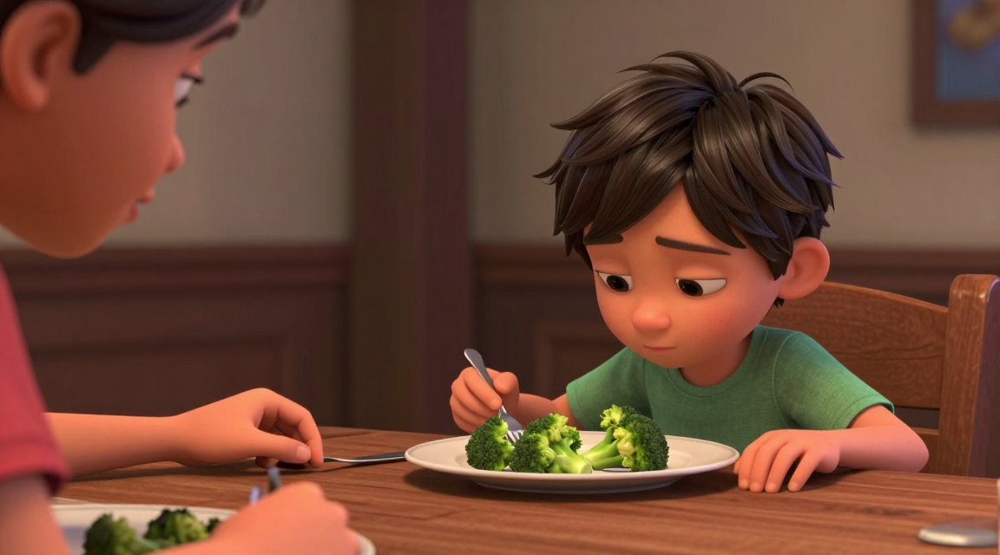
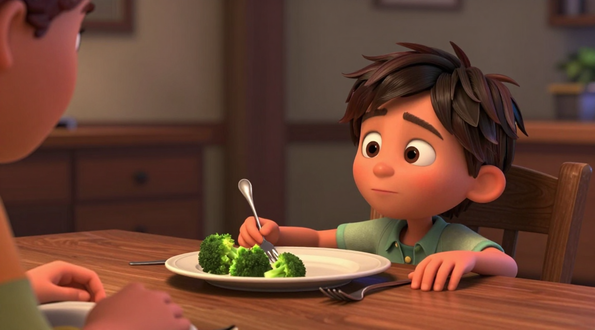
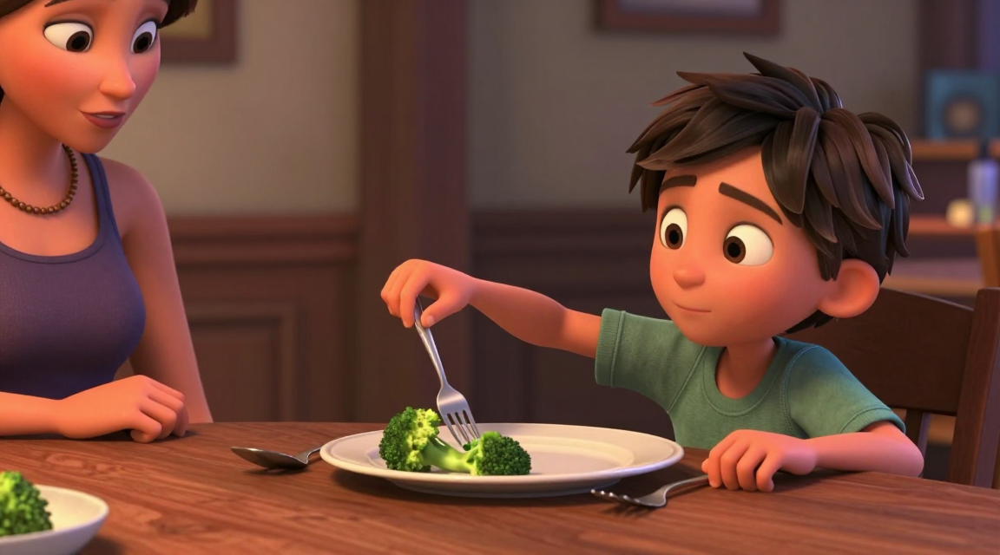
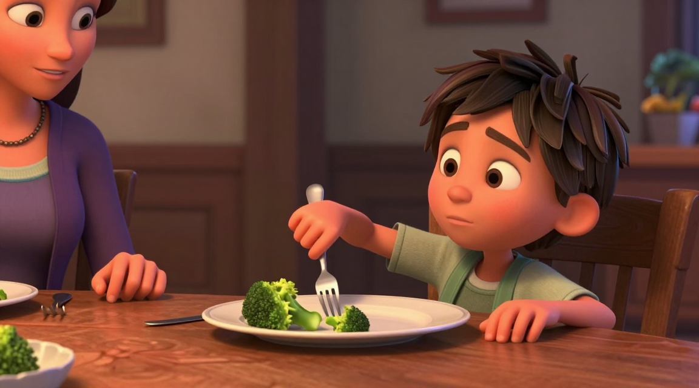

shot-02-kf-01t=0.0s · seed 704251initial

semantic: failcontinuity: failcomposition: weakcharacter: fail
- 叉子已被握住且叉齿已经戳进西兰花, 而本帧要求'叉子未被碰过、什么都没有动'。
- 跨剪辑点的连续性锚点因此失效: 它没有复现 shot-01 末帧的姿态。
- 画面左缘的人物不是母亲, 而是另一个男孩, 并且自己手里也拿着叉子——违反'母亲什么都不碰'。
- 构图本身是 medium_close 且孩子在右侧, 但左缘人物错误使这一格的在场关系不成立。
Semantic purpose: 跨剪辑点的连续性锚点，同时是“什么都没发生”本身的证据。删掉它，画面就从两人镜头直接跳进“已经后靠”的状态，观众失去衡量停顿长度的基准——而停顿是不情愿最先可见的形态。0.7s 的 hold 是这次停顿的可感知下限。
Must show
- Posture identical to the end of shot-01: hands flat, upright, gaze on the plate.
- Fork within easy reach and untouched.
- No external obstacle and no one restraining the child.
Must avoid
- Any backward lean or gaze aversion yet — that belongs to the next frame.
- Food-directed facial expressions such as a wrinkled nose.
prev: shot-01-kf-02 · next: shot-02-kf-02
shot-02-kf-02t=0.7s · seed 704251trigger

semantic: failcontinuity: failcomposition: passcharacter: fail
- 要求是躯干后撤、双手略收回、视线回避; 实际是手臂前伸、叉子已插入食物, 抵抗第一次可见的那一刻没有被画出来。
- 躯干没有离开桌面, 'withdrawal' 完全缺席。
- 视线确实离开了盘子, 这是本帧唯一成立的 must_show。
- 左缘人物仍不是母亲。
Semantic purpose: 抵抗第一次变得可见：后撤 + 视线回避。这一帧把“停顿”与“走神”区分开——身体正在离开被要求的对象。缺了它，动作会从中立坐姿直接跳到伸手，整段就只剩下“慢”，而慢本身不是不情愿。它到下一帧的 1.4s 里，先把后撤姿态保持住，再开始伸手。
Must show
- Torso withdrawn from the table — small but unmistakable.
- Gaze aimed away from the plate.
- Hands drawn back slightly rather than reaching.
- Neutral mouth.
Must avoid
- Pushing the plate away or shaking the head — that reads as refuse.
- Wrinkled nose or covering the mouth — that reads as an aversion to the food itself.
- A face that alone reads as sad, frightened, or angry.
prev: shot-02-kf-01 · next: shot-02-kf-03
shot-02-kf-03t=2.1s · seed 704251transition

semantic: failcontinuity: failcomposition: passcharacter: fail
- 这是区分 reluctant 与普通慢动作的判据帧, 结果是本批最严重的失败。
- 要求'手停在离叉子约三分之二处且没有碰到叉子'; 实际手已握叉、叉齿已插入西兰花。
- 要求'躯干仍然后靠、只有手臂推进'; 实际躯干前倾并带轻微笑意, 读成的是配合而不是阻力。
- 母亲第三次改变外观(紫色背心加项链)。
Semantic purpose: 把 reluctant 与普通服从分开的那一帧。从“后靠”直接过渡到“握着叉子”，插值与视频模型都会生成一次平滑、正常的伸手，中途那半秒的停顿会被抹掉——而启动延迟正是不情愿的核心证据。身体没有跟上手，也让“只有手在配合”直接可见。
Must show
- Hand stopped short of the fork and not touching it.
- Torso still back — the body has not committed to the action.
- Gaze still not on the plate.
Must avoid
- The hand reaching for anything other than the fork.
- The hand recoiling backwards, which would read as refuse.
- A fast, confident reach with the body following it.
prev: shot-02-kf-02 · next: shot-02-kf-04
shot-02-kf-04t=2.9s · seed 704251final

semantic: weakcontinuity: weakcomposition: passcharacter: fail
- 本批最接近规格的两张之一: 叉子在孩子自己手中、抬离桌面、叉齿尚未插入食物, 母亲在左缘且没有触碰任何东西。
- 躯干没有保持后靠——交给 shot-03 的连续性契约里最关键的'低意愿没有随动作开始而消失'因此没有画出来。
- 视线离开盘子, 成立。
- 母亲的服装与前几帧均不一致。
Semantic purpose: 本镜头的结束状态，也是交给 shot-03 的连续性契约。它证明孩子最终**自己**握住了叉子（不是拒绝，也不是被喂），同时躯干仍然后靠——低意愿没有随着动作开始而消失。删掉它，握住叉子这个动作就发生在剪辑点之间，观众看不到他是自己拿的；shot-03 的首帧也失去了可对齐的上游状态，跨镜连续性只剩一句口头承诺。
Must show
- The fork in the child's own right hand, lifted clear of the table near the rim of the plate.
- Tines not yet in the food — the action is started, not completed.
- Torso still leaned back at the angle established earlier.
- No one else's hand on the fork, on the plate or on the child.
Must avoid
- The torso coming forward with the arm, which would end the withdrawal here.
- The gaze turning eager or the mouth shifting into a smile.
- The fork already loaded with broccoli — that belongs to the next shot.
prev: shot-02-kf-03 · next: shot-03-kf-01